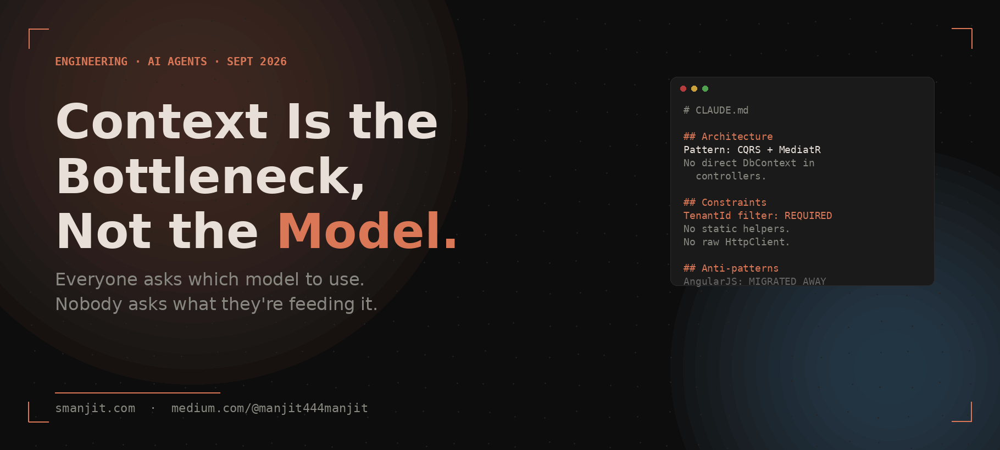

Everyone's asking which model to use. Nobody's asking what they're feeding it. Here's what I learned after building a 17-agent pipeline that ships to production.

When I started building agentic workflows, I made the same mistake everyone does. Something wasn't working, so I switched models. GPT-4o instead of GPT-4-turbo. Claude Sonnet instead of Claude Haiku. Tweaked the temperature. Tried a different system prompt.
The output was still inconsistent. Sometimes brilliant. Sometimes completely wrong about how our codebase was structured. The model would generate code that ignored our architecture patterns, used conventions we'd explicitly moved away from, or missed context that any engineer on the team would have known.
The model wasn't the problem. The context was.
"Give an agent a great model with no context, and you get fast, confident, wrong answers. Give it average context, and you get mediocre answers. Give it great context, and the model almost doesn't matter."
When most developers say "context," they mean the messages in the conversation window. That's only part of it. Context for an agent is everything the agent knows about the world it's operating in before it starts generating.
In a codebase, that means:
Without these, every agent session starts cold. The agent has no idea whether you prefer repository pattern or direct DbContext access. It doesn't know that you migrated away from AngularJS last year and old patterns shouldn't be reintroduced. It doesn't know that certain API responses require tenant isolation before they're returned.
It guesses. Sometimes it guesses right. Often it doesn't.
I built a task management app to prototype agentic workflows. The spec was simple: a feature to bulk-assign tasks to a team member. I gave the agent the feature description and asked it to implement it.
The output was technically correct code. It worked. But it used a pattern we'd moved away from six months ago — direct SQL queries instead of the repository layer we'd standardised on. It also added a new endpoint instead of extending an existing one, duplicating validation logic we'd already centralised.
The code passed tests. It would have failed code review. A human engineer would have caught it in 30 seconds. The agent had no way to know.
The solution was a file I called CLAUDE.md — a structured document that every agent reads before starting work. Think of it as onboarding documentation written specifically for AI consumption, not for humans.
Human documentation is optimised for readability. Agent context is optimised for precision. The difference matters.
# Architecture Decisions ## Pattern: CQRS with MediatR All write operations go through MediatR commands. All read operations go through MediatR queries. Do NOT use DbContext directly in controllers or services. Do NOT bypass the mediator pipeline. ## Pattern: Repository layer Data access only through repository interfaces. Repositories live in Infrastructure/Repositories/. Never inject IAppDbContext directly into application services. ## Tenant isolation Every data access MUST filter by TenantId from ITenantContext. This is not optional. Missing tenant filter = security bug. ITenantContext is always registered via AsyncLocal — do not pass it manually. ## What we DO NOT do - No static helper classes - No direct HttpClient instantiation (use IHttpClientFactory) - No catching Exception base class without rethrowing - No Console.WriteLine in production code
The key insight: constraints are more important than examples. Agents are good at generating code that works. They need explicit instruction about the things they should never do — because they have no way to infer them from the codebase structure alone.
After iterating on this for months, here's what actually moves the needle:
Don't just list the pattern — explain why you chose it. "We use CQRS because write complexity is high and read models need to be independently optimised for performance" gives an agent enough reasoning to apply the pattern correctly in edge cases, not just copy the structure.
The things you've moved away from. Old patterns still exist in the codebase — agents will find them and repeat them unless you explicitly say "we migrated away from X, don't use it." This alone removes a large category of review comments.
A list of existing utilities, base classes, and shared services. Agents will write a new date formatter before checking if one exists. Tell them what exists and where to find it.
Don't frame these as guidelines. Frame them as rules. "Every query MUST filter by TenantId" is more effective than "remember to filter by TenantId." Agents respond to constraint language.
What the agent should do to verify its own output before considering work complete. Run the tests. Check the linter. Confirm no new dependencies were introduced without justification. Building this into the context means agents self-verify instead of waiting for CI to catch failures.
Keep CLAUDE.md under version control alongside your codebase. When an architecture decision changes, update the context file in the same PR. Treat it as a first-class engineering artifact — because for your agents, it is.
My agentic story-to-PR pipeline — 17 agents handling brainstorm through PR creation — ran inconsistently before structured context. Some runs produced clean, reviewable code. Others produced code that worked but violated conventions in ways that would have created maintenance debt.
After building and maintaining a proper context foundation, the output became consistent enough to trust. Not perfect — agents still miss things — but consistent enough that the validation step catches the misses before they reach review.
The pattern-related review comments — "use the repository layer," "missing tenant filter," "we don't use static helpers" — almost completely disappeared. Not because the agents got smarter. Because they had the information they needed.
Context engineering changes what you spend your time on. Instead of fixing agent output, you're curating what agents know. Instead of catching mistakes in review, you're preventing them in the context definition.
It also scales in a way that individual prompt tweaks don't. A well-maintained context file helps every agent in every session. A good prompt helps one agent in one session.
"You're not training the model. You're training the environment the model operates in. That's a different skill — and a more durable one."
The engineers who will get the most out of AI agents aren't the ones who write the cleverest prompts. They're the ones who maintain the best-structured, most precise context foundations — so that every agent that touches their codebase starts with the full picture instead of guessing.
Stop chasing model upgrades. Start engineering context.
I write about AI-native engineering, .NET, and production systems. If this was useful, follow along on Medium or connect on LinkedIn.